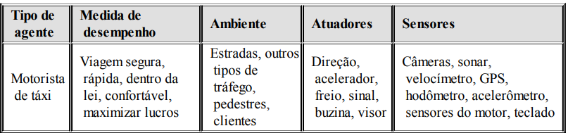
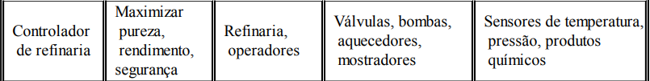

Trabalho de IC
- Um agente é tudo o que pode ser considerado capaz de perceber seu ambiente por meio de
sensores e de agir sobre esse ambiente por intermédio de atuadores
- Agentes não artificiais, como os humanos, são aqueles que possuem como sensores olhos, ouvidos e outros orgãos.
- Agentes artificiais, como robôs, são aqueles que podem ter como sensores câmeras, detectores de infravermelho ou outras tecnologias do tipo.
- Um agente racional é aquele que age para alcançar o melhor resultado ou, quando há incerteza, o melhor
resultado esperado.
- Mundo do Agente Aspirador de Pó.
1. quantidade de sujeira limpa
2. quantidade de tempo
3. quantidade de eletricidade consumida
4. quantidade de barulho gerado
5. um ponto por quadrado limpo no tempo T
6. um ponto por quadro limpo em um passo, menos
um ponto por passos sem limpar
7. penalizar por > k quadrados sujos
- Para especificar o PEAS, nós especificamos as seguintes propriedades dos agentes: Desempenho, Ambiente, Atuadores e Sensores.
Exemplo 1: 
Exemplo 2: 
- A função de agente é uma descrição matemática abstrata. Programa de agente é uma implementação concreta, relacionada à arquitetura do agente.
- Os tipos básicos são agentes de reflexos simples, agentes de reflexo baseados em modelo, agentes baseados em objetivos, agentes com aprendizagem
- Agente com aprendizagem pode atuar em um ambiente desconhecido inicialmente e, através de aprendizado ao passar do tempo, evoluir. Diferenciando-se dos demais por conseguir interpretar e atuar eficientemente no ambiente.
- Agente tabela, agente reativo simples, agente reativo baseado em modelos, agente baseado em objetivos.